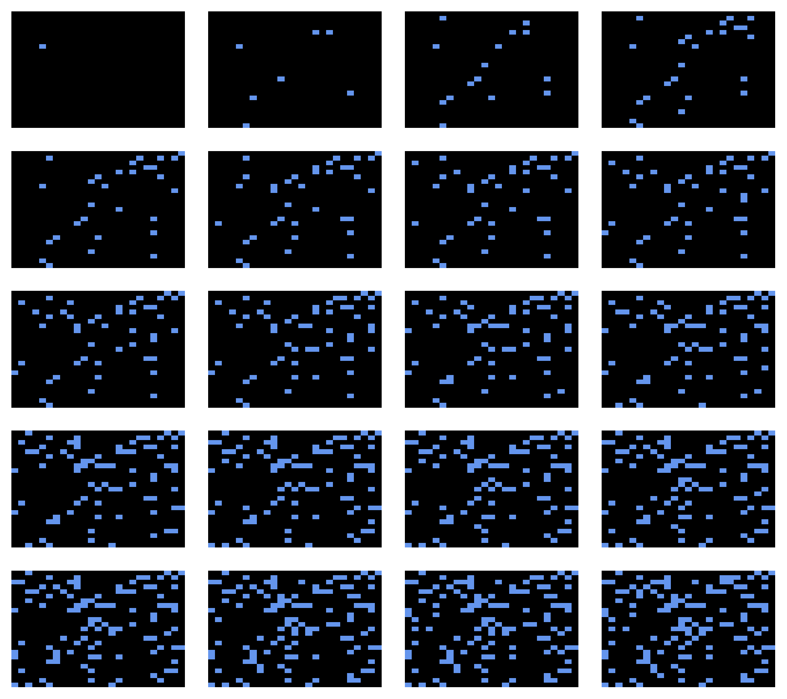
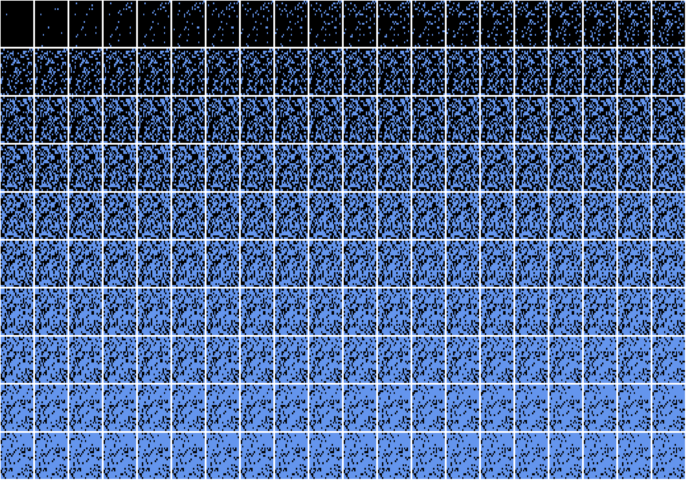
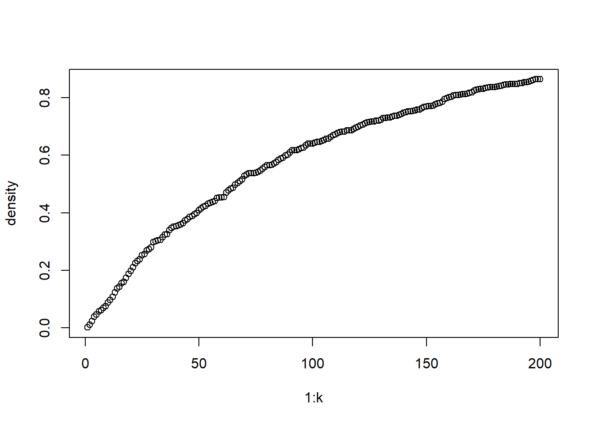

Part II: A generative model
Generating random arrays is fine, but when we look at them in sequence, the just look random flickering over time. What if we wanted to construct a network that grows randomly based on the previous conditions? The function below accomplishes this using the following steps:
- Create an empty array with dimensions
(N,N,layers)to hold results. - Set an initial conditions by randomly selecting an element in the first matrix and assigning it a value of
1. - Using for loops, examine every element
[i,j]in the current layer (k) and compare to the previous layer (k-1).- If the element is filled, remain filled.
- If the element is empty, a slim chance that it gets filled.
- Return the complete array.
RandomGrowth <- function(N, layers, p, seed=777, loops=F) {
set.seed(seed)
# create an empty array to hold results
A <- array(NA, dim = c(N,N,layers))
# set initial condition by randomly selecting
init <- matrix( rep(0, N^2), nrow = N )
init[ sample(1:N, 1), sample(1:N, 1) ] <- 1
A[,,1] <- init
# loop through
for( k in 2:layers ) {
for( i in 1:N ) {
for( j in 1:N ) {
A[i,j,k] <- ifelse( A[i,j,k-1] > 0, 1,
rbinom(1, 1, prob = p))
if (loops == F) { diag(A[,,k]) <- 0 }
}
}
}
return(A)
}To use the function, we need to set the following:
N= the number of rows and columns in each matrix (i.e., number of nodes).layers= the third dimension of the array; the number of matrix layers.p= the probability that an empty cell is filled; this controls the growth rate.
N <- 25
k <- 20
p <- 0.01
new_A <- RandomGrowth(N=N, layers=k, p=p, seed = 27, loops = T)Now we can plot each matrix and see how the network grows.
par(mfrow=c(5,4), mar=c(1,1,1,1))
apply(new_A, 3, image, axes=F, col=c('black','cornflowerblue'))
## NULLIt appears as though this network is growing in a slow, additive way. This is because the only spread that occurs is based on our random trial with probability p, which prevents each filled cell from invading neighboring empty cells. We can visualize the growth by plotting the density of each matrix at k.
plot(1:k, apply(new_A, 3, function(x) sum(x) / N^2),
ylab='density')
But perhaps the additive pattern we are seeing is only because we didn’t let the network grow for long enough. What if we let the algorithm go longer by increasing k? Shouldn’t the array eventually fill up completely? If so, we should expect to see a logistic growth pattern.
N <- 25
k <- 200
p <- 0.01
new_A <- RandomGrowth(N=N, layers=k, p=p, seed = 27, loops=T)
par(mfrow=c(10,20), mar=c(0.1,0.1,0.1,0.1))
apply(new_A, 3, image, axes=F, col=c('black','cornflowerblue'))
## NULLNow we calculate the density for every matrix in our 25 x 25 x 200 array and see if there is a logistic curve.
plot(1:k, apply(new_A, 3, function(x) sum(x) / N^2),
ylab='density') There you have it. A simple generative and random model of logistic growth.
In the next post, I will explore extensions to this generative model where growth spreads across neighboring cells (e.g. cellular automata), and where nodes with the largest number of connections tend to gain more connections (e.g. preferential attachment).
Maximum regards,
SAS